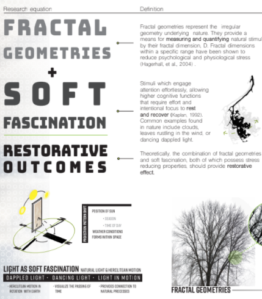

Posters | Health & Healthcare
Posters aren't eligible for credit
An Anthropological Approach to Health Clinic Design in Rwanda

Integrating Auditory Neuroscience into Architectural Acoustics Consulting Practice

Interior Design Attributes to Stimulate Cognition and Assist people with Alzheimer’s.
Nexus between Sustainable Buildings and Human Health
Impact of Project Strategies on the Wellness in a Corporate Building: Well Certification and "Neuroarchitecture:
Can Residential Architecture Constitute a Part of Human EE and Contribute to Recovery, Prevention, and Stress Reduction?

Reinventing Culture Through the Use of Space: Longitudinal Survey Presenting Four Case Studies in Workplace and Healthcare Facilities

Backyard Motosensory Path - Pilot Study
Enriching Spatial Memory in Individuals with Mild Cognitive Impairment through Enriching their Living Environment

Revisiting Kirkbride: The Dark Side of Attunement and Designing for Respite

If These Walls--and Inhabitants--Could Talk: How Ethnographic Methods Give Voices to Those Most Impacted by Carceral Design

Fractal Aesthetics: Designing for Stress Reduction with Fractal Geometries and Soft Fascination